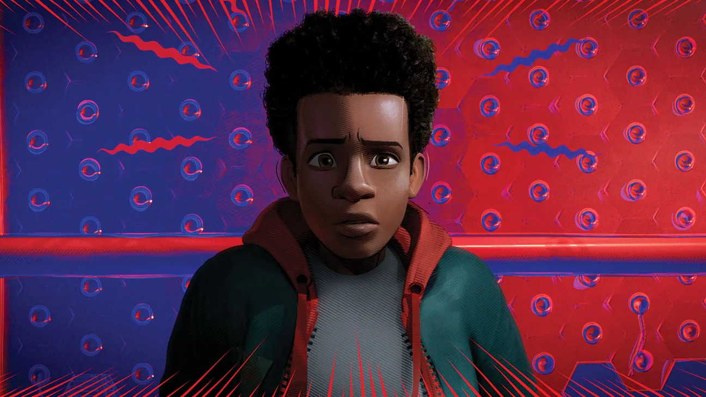

"Sometimes I feel like I'm the only one standing up for what's right."
Character Description: Miles Morales is a bright, creative teenager discovering his own identity as he learns to become Spider-Man. He struggles with expectations but ultimately embraces courage, heart, and the belief that anyone can wear the mask.
Abilities
- Wall-Crawling: Can cling to and scale walls.
- Spider-Sense: Alerts him to nearby danger.
- Venom Strike: Can temporarily paralyze enemies with bio-electric shocks.
- Camouflage: Can blend into surroundings, becoming nearly invisible.
- Enhanced Strength, Speed, Agility, and Reflexes.
Relationships
- Peter B. Parker: Mentor and guide across the Spider-Verse.
- Gwen Stacy: Ally and friend; works together in multiverse adventures.
- Jefferson Davis & Rio Morales: Parents, supportive yet unaware of his double life at first.
- Spider-People across Multiverse: Collaborators and friends.
Background
Miles gained his powers after being bitten by a genetically enhanced spider. Unlike other Spider-People, Miles' powers include invisibility and the venom strike. He balances school, family, and superhero duties while learning to embrace his unique potential.
Fun Facts
- First appeared in Ultimate Fallout #4 (2011).
- Originally created by Brian Michael Bendis and Sara Pichelli.
- Becomes the main Spider-Man of the Ultimate Universe after Peter Parker's death.
- He is one of the first Afro-Latino superheroes to become Spider-Man.